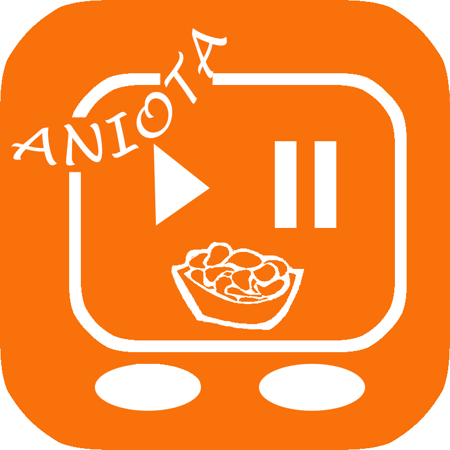

片手でWorld(2次元)を収めよう!!!
通学中でアニメを見るときはスマホが横向きのため、片手でコメントやコントロールすること難いです。 電車で多くの人が動画見るとき吊り手が掴まないため、ブレーキするとき危険です。よって、今回は片手で吊り手を掴み、片手でコメント入力やコントロールしやすいような、アニメ見るアプリをデザインしました。
アプリ画面の紹介
- スタート画面
- ログイン画面
- メイン画面(おすすめ)
- メイン画面(チャンネル)
- チャット画面
- マイプロフィール
- 動画＋概要+メニュー画面
- 動画＋チャット入力画面
- 動画＋コントロール画面
- 動画＋話数選択画面
---アプリ全体はオレンジ色をメインとして、ワクワクの躍動感を出しています
---投稿や番組フォローなど機能が備えているため、SNS連携や新規登録してもらいます
---画面の上半分はおすすめの番組、下半分は現在放送中アニメになっています
---年代別や種類別で分けています
---キーボードやコントロールはジェスチャを使って左右下移動することができる。左手や右手に変えてもすぐにキーボードを移動することができる。 今回のアプリデザインは右手で使用することを想定して作っています
---再生,音量,フルー画面など動画を見る時使うコントロールが全部右手のみで操作することができます。また、画面をロックすることができる、よって間違って他の画面に移動する心配がありません
---見たい話数を入力して見ることができます